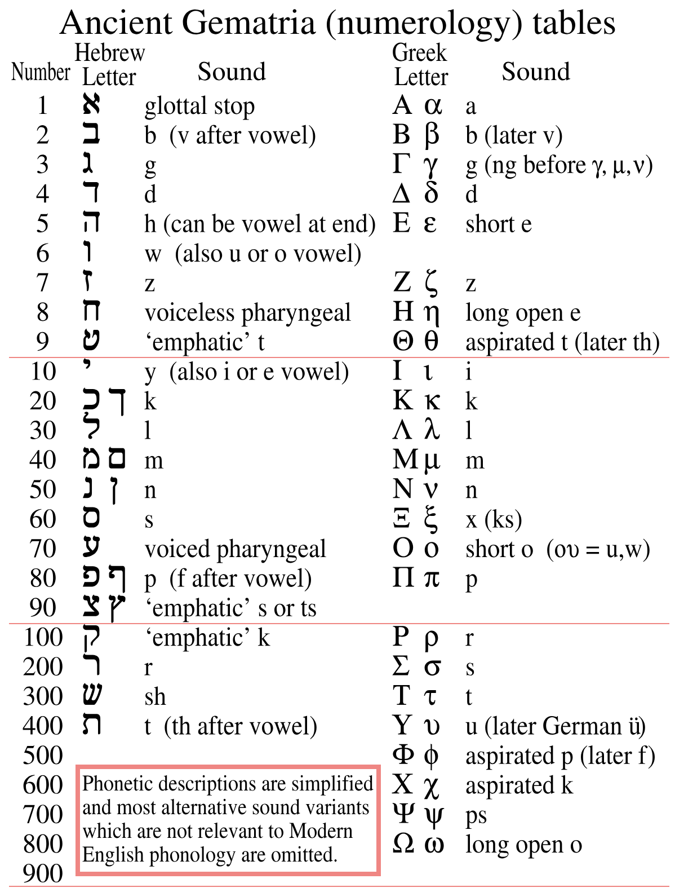
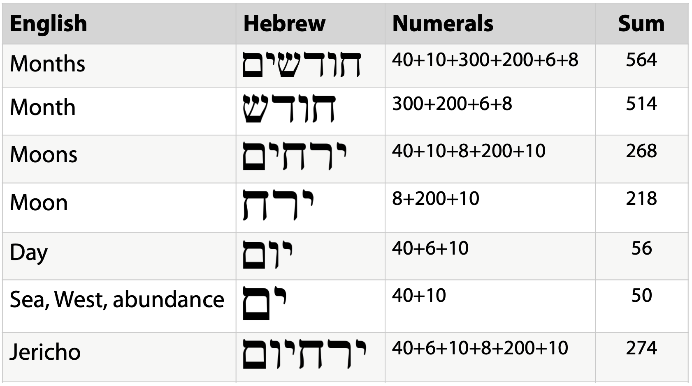

Job's Anti-Jubilee Clock, Defined
Published on 2024-06-09
This article was originally published as the chapter "Job's Anti-Jubilee Clock, Defined" in Plague, Precept, Prophet, Peace. It solves a tricky riddle, tackles some chronology issues and makes the case for the existence of a prophetic clock that runs from Abraham to Jesus and is hidden in the Book of Job.
The necessity of the riddle is that I expect that the key books that contain prophetic clocks also have riddles that tell you how long each period runs. Such is the case for this clock, for the main clock in Ecclesiastes, and for one taken from the Ten Commandments, to name a few.
We all need a year of Jubilee
This was going to be an appendix, the kind you can safely skip. I now realize it is the main message and have enlarged it. Please don’t skip it! We have God’s Law, but we carelessly break it. He sends plagues and lesser forms of discipline, but many of us disregard them. He sends prophets to explain and remind, but we block out what they have to say. At this point, God is justified in wiping us off the face of the earth, but He didn’t.
God sends grace.
For Christians, this grace is fully realized in Jesus Christ. However God prefigured this with elements of His Law. This chapter will focus on one: the Year of Jubilee found in Leviticus 25. Please read it before we proceed. I am specially qualified to write about the Year of Jubilee because God just gave me one.
The Year of Jubilee was to come every fifty years. Many debts would be canceled. Slaves would be freed. Ancestral lands lost due to misfortune, injustice, or folly would be returned to their original owners. The provisions applied to all Jews, whether they deserved it or not. They just needed to confess their sins on the Day of Atonement, which began this special year.
I have studied the Bible with perseverance and piety. I have prayed over this message. I have digested history and theology and labored diligently. I set a timeline of December 31, 2022 to complete and publish this book. I failed.
All the insights that preceded this chapter I could proudly call the justly deserved fruits of my labor. God buries the treasure and I dig it out. I have earned my wages. Now I don’t believe that, as my prior results greatly exceed my wisdom and ability. But even if I did, the insight into the Jubilee that has been given to me could never be one of them. The completion of this book was delayed because God had set aside a miracle for me, one I did not deserve, carved from the disastrous fruits of my folly. Some wisdom may only be experienced to be believed and understood.
How has 2022 been a Year of Jubilee for me and my family? My father (may he rest in peace ) died in January, at age 95. The inheritance that he left my siblings and I enabled my wife and I to pay off our mortgage and all other debts, make urgent, long deferred home repairs and purchase a newer car to replace my 2005 Honda Accord. This freed us from decades of financial woes, some deserved and some undeserved.
Much of the early and middle part of the year, my eldest daughter Jaime endured months of a rare and frightful illness which required hospitalization and provoked deep depression in her and great anxiety in my wife and I. She has since recovered.
Then in the waning days of the year, I foolishly skated on the thin ice of Winter Pond in Winchester, MA. On December 26, 2022, I nearly lost my life in those frozen waters. Even worse, Jaime nearly skated out to try to rescue me and needed to be restrained by a bystander. I was in those icy waters for at least twenty-five minutes. The Fire Department came to my rescue. Erica Poitras scooted out to me on a sled with pontoons and wrestled me onto the sled. This was complicated because, unbeknownst to us, my right arm had been fractured by the fall. I praise her skill. By the time I reached the ER, my core temperature was down to 94.5 F. Oh, did I shiver!
The upper humerus fracture would require reconstructive surgery by Dr. David Alessandro of Excel Orthopedics and Winchester Hospital. They installed a metal plate and seven screws to reposition the bones and repair the dislocation.
People who witnessed the TV news footage of my rescue remark about how I was smiling from the stretcher. Dr. Austin Quinn at the Winchester Hospital ER said that, considering the trauma I had just endured, he had never seen anyone so cheerful. Also, he and later Dr. Alessandro could not understand why I was not reporting greater pain, given the extent of the injury.
I know why. I spent over two years studying what the Bible has to say about the path to peace. It is not that I am so smart as to find a secret message never before understood by others. It is that God’s Word is that powerful, doing miraculously for us and in us what we cannot do for ourselves. When I was out on that pond, I started thrashing, wasting my energy. There was no way I could get back on the ice by myself or kick hard enough to become a human icebreaker. Given that I had a broken arm and didn’t know it, the only wise course for this fool to follow was to stay calm. I had the presence of mind to stretch my body out and catch my skates on the ice behind me. Thus my hands and head were on the ice in front and feet supporting me behind. On the few occasions when my feet slipped off and drifted to a point four feet deep, I could feel that the water was much colder down there. By keeping them elevated on the ice, my body contacted warmer water, prolonging my ability to hold on. Nobody ever taught me this, but it worked. I must conclude that God gave me the presence of mind to do this. He gave me lifesaving knowledge when I needed it most.
During my recovery, prior to surgery, I found new insight from the Book of Ruth about the power of community to embrace, heal and bless. Visits from members of my church were helpful. Jubilee is not only an individual affair. It frees the community to do good. During one visit on January 3rd, 2023 with our pastor emeritus Larry Showalter and his wife Lois, I shared some of my ideas about the Ten Commandments. About the fifth commandment to honor your father and mother, I remarked that this points us to Jesus. No one in history honors his father and mother like Jesus did and does. Remember that thought.
After midnight, early Wednesday morning, the pain from my injury began worsening. I took the prescribed painkiller but a half hour later was still experiencing no relief. Despite the pain, I directed my praise to God that I was alive. Recalling Revelation, I prayed, “Holy, holy, holy is the Lord God Almighty, who is, and was and is to come.” My pain receded about halfway, but remained too great for me to sleep.
I continued praying. Then I saw an image in my mind of a woman whose eyes were filled with compassion. She pulled me close to her bosom, like a mother embracing her child. She never said a word. All pain drained out of me and stayed away for at least five hours, permitting me to rest.
Before I slept, a spirit of intercession came upon me. For over an hour I prayed for family, neighbors, my church, my coworkers, patients at Winchester Hospital, the Ukraine, and the US Congress.
Reflecting upon all that happened that morning and during the previous day, I can only reach one conclusion. When I prayed that prayer from Revelation, I was obeying the commandment by imitating Jesus and giving honor to God, the Father. The Holy Spirit then communicated a measure of comfort to me. The appearance of the woman was unbidden. I believe that Jesus chose that moment to honor his mother, the Virgin Mary. The Comforter, the Holy Spirit, delivered pain relief using the image of a woman to facilitate things.
Half my relief came from the Father. Half came in the name of Christ’s mother. I do not therefore conclude her power is equal to the Father’s. Instead, Jesus chose this time to honor them equally in my sight. The godhead is entitled to delegate authority and power as they choose. As a Baptist, not given to regular expressions of devotion to Mary, I could keep silent. Jesus is not ashamed to honor her, so neither will I. Her compassion is real and her touch miraculous. I will treasure this undeserved mercy forever. With a visit from the Blessed Virgin Mary to cap off my Jubilee year, my cup runneth over.
Job’s experience of Jubilee ran through more trials than I endured, but his concluded with an even more blessed visit. The Creator spoke unmatched wisdom, healing and abundance into his life. However, at first it didn’t look like that was in the cards. That is why much of Job reads like an anti-jubilee…
The Clocks in Job
The Book of Job contains many prophetic clocks. Five were explained in Peace, like Solomon Never Knew and one earlier in this book. Now comes a seventh, to be called Job’s Anti-jubilee Clock. It was alluded to in the chapter “Which Ten Commandments?” Here is a list of the six clocks already defined, with the first five tackled in Peace, like Solomon Never Knew:
- Satan’s Countdown Timer (along with Genesis & Matthew)
- Job’s Decreation Clock (in Job 3)
- Job’s Chapter Clock (detailed analysis of all chapters of Job)
- Job’s Salvation Clock (the job description for a savior, chronicling Jesus’ ministry)
- Job’s Harvest Clock
- Job’s Empire Clock (from “Job: The Course of Empires” and “The Meaning of the Beasts of Job” in this book)
The most expansive of the above clocks was Job’s Chapter Clock. It spanned all of history from the creation to the second coming. Every chapter of Job disclosed one or more prophecies. The excellent correspondence with history suggests that this is the principle clock in Job.
Analysis of Ecclesiastes in Peace uncovered three main clocks. One addressed Israel and the Church and ran from the dedication of Solomon’s Temple to the second coming. Another addressed the world and spanned all of history. A third addresses modern Israel and runs from the Holocaust until Jesus returns. This was possible because prophecies for each era appear in each section. This overlap makes it difficult to decide which verses go with which clock. Sometimes the same verse has a different meaning for each clock.
Since Job’s chapter by chapter clock already covers all of history it is fitting that any additional clock encompass a shorter span of history. If we survey the clocks in Peace, the following time periods (other than all of time) are possibilities worth testing:
- Creation to Christ’s first coming
- Dedication of the Temple to Christ’s first coming
- Dedication of the Temple to Christ’s Second Coming
- Abraham to Christ
- Babylonian Captivity to Fall of Byzantium
- King David to Christ’s Second Coming
- Christ’s birth to Second Coming
- Crucifixion to Second Coming
- Satan’s Unbinding to Second Coming
- Completion of Septuagint to Second Coming
- Holocaust to Second Coming
Several of the above (and others not listed) were tested by comparing important events in history to phrases in Job. Some had a few good matches but most chapters in Job did not correlate. The following sections will propose the best definition found, solve some Bible chronology problems related to a few key dates, then defend the definition of the clock, chapter by chapter.
Defining the Clock
The name of the clock reflects the nature of Job as negative philosophy. For example, Job 41 describes the sea monster Leviathan partly in terms of what it will not do for people. It won’t make a covenant with you to serve you forever (41:4). It won’t speak soft words (41:3). By inverting these negatives, which do describe a demonic empire and its leader, you get a picture of Christ. Likewise, we shall see that the regulations for the year of Jubilee found in Leviticus 25 describe a positive situation at odds with the negative circumstances of Job. Job’s time of suffering is the antithesis of the year of Jubilee.
- Clock Name: Job’s Anti-jubilee Clock
- Clock Type: Generational Clock
- Bible Book: Job
- Clock Start: 1952 BC (Birth of Abraham)
- Clock End: 107 AD (after Revelation written)
- Timespan: 2059 years
- No. of Intervals: 42
- Period: 49 years (one Jubilee cycle, overlapping one year)
- Key Events:
Key events identified in the prophesies of this clock are:
- the birth of Abraham in the 1st era,
- the Exodus in the 11th,
- Solomon’s dedication of the Temple in the 21st
- the Babylonian Exile in the 28th,
- Esther’s victory in the 31st,
- the life of Christ in the 41st
- the destruction of Herod’s temple and completion of the Word in the 42nd.
Job’s Prophetic Completeness. Peace explained that Ecclesiastes 1 identifies five kinds of prophetic clock: Generational, Celestial, Empire, Spiritual, and Harvest. That book uncovered three of those types in Job, the Generational, Spiritual and Harvest, with the first being the most important. This book has already spotted a fourth, an Empire clock. Thus it would be fitting that Job round out its collection of clock types with the fifth and final type, a Celestial clock. However, attempts to fit Job, Scripture and history into a Celestial framework, with no overlap of generations, were unsuccessful. Instead, an additional Generational Clock was found.
About the clock period. Generational clocks may have eras that overlap the generations that precede and follow them, just as human generations and reigns of kings overlap. Also, in Generational clocks, the lengths of generations do not need to be equal, since people live for different lengths of time. Thus in Job’s Generation Clock, the first two generations are for Adam and Methuselah, two very long-lived people. Then the subsequent generations each lasted one hundred twenty years minus one year of overlap, for 119 years per period. In this clock, the period is a uniform fifty years with a single year of overlap. Fifty years constitute a complete Jubilee cycle, which shall prove important. The period may be inferred from evidence external to Job, from the Gospel of Matthew. It may also be derived internally, using only evidence from Job, as we shall see soon.
Matthew’s Genealogy. Vital external evidence for the existence of this clock comes from the genealogy of Jesus in Matthew. Almost a decade ago, these verses gave me the idea that perhaps God marks off time in human generations, not years. That started me down the path of trying to count how many generations God has planned for human history:
So all the generations from Abraham to David
were fourteen generations,
and from David to the deportation to Babylon
fourteen generations,
and from the deportation to Babylon to the Christ
fourteen generations.
- Matthew 1:17
The perplexing thing was that Matthew drew attention to the number forty-two (three times fourteen) but the direct line from Abraham to Jesus has only forty-one names. As it turns out, this is significant. Job’s Generational Clock synchronizes the end of the 41st generation with the end of the time of war, the Great Tribulation. Why? Because the 42nd generation is open-ended. It is the time of peace, which stretches on until eternity. It is the generation of those who have been changed into their glorified bodies. Thus the 42nd name is really the Church.
This significance of the 41st name carries into the present clock. The first era begins with the birth of Abraham and the 41st era includes the birth, ministry, crucifixion and resurrection of Jesus. Then the 42nd era is the beginning of the church age. It may technically conclude with the writing of Revelation and death of John, but in reality the church age continues on until Christ returns.
Prolepsis. Matthew’s genealogy promised a generational clock of forty-two eras running from Abraham to Christ. Peace delivered a generational clock but it ran from creation to consummation, not Abraham to Christ. This books finally delivers that clock from Abraham to Christ. You may ask, why did Matthew include all those extra names in his genealogy? There aren’t forty-one or forty-two. There are fifty! Does this prophetic clock make use of all the names or just throw them away?
The Bible does not waste words. Any explanation that ignores part of the text is incomplete or plain wrong. This clock takes all the names into account.
Matthew shows one thing to hide another. He shows forty-two, but hides fifty. There are forty-one names in the direct line from Abraham to Jesus, but the genealogy names other people: wives, brothers, sisters, and even a murder victim (Uriah).
Matthew has skillfully given us fifty names in his list (counting the two sets of brothers as collections). Here they are:
| Gen | Name | Gen | Name | Gen | Name | Gen | Name |
|---|---|---|---|---|---|---|---|
| 1 | Abraham | 11 | Boaz | 20 | Joram | 32 | Eliakim |
| 2 | Isaac | - | Rahab | 21 | Uzziah | 33 | Azor |
| 3 | Jacob | 12 | Obed | 22 | Jotham | 34 | Zadok |
| 4 | Judah | - | Ruth | 23 | Ahaz | 35 | Achim |
| - | Judah's Bros | 13 | Jesse | 24 | Hezekiah | 36 | Eliud |
| - | Perez | 14 | David the King | 25 | Manasseh | 37 | Eleazar |
| 5 | Zerah | 15 | Solomon | 26 | Amos | 38 | Matthan |
| - | Tamar | - | wife (of Uriah) | 27 | Josiah | 39 | Jacob |
| 6 | Hezron | - | Uriah | 28 | Jechoniah | 40 | Joseph |
| 7 | Ram | 16 | Rehoboam | - | Jech.'s Bros | - | Mary |
| 8 | Amminadab | 17 | Abijah | 29 | Shealtiel | 41 | Jesus Christ |
| 9 | Nahshon | 18 | Asaph | 30 | Zerubbabel | ||
| 10 | Salmon | 19 | Jehoshaphat | 31 | Abiud |
These fifty names stand for fifty years. This defines (externally) the period of each era in the clock. Finding and solving the internal riddle within Job that agrees with this fifty-year value was not easy. Before we get to that, we need to set our chronology on a firm footing.
Some Bible Chronology Riddles Solved
When was Abraham born? How long were the Jews captive in Egypt? When did the Exodus happen? How long did the period of the Judges last? How long did Saul reign? When did David ascend to the throne? When was Solomon’s Temple dedicated? We need reasonably accurate answers to all these questions to calibrate this clock and match key events in history to it. The best answers, consistent with Biblical inerrancy, are not always the ones most widely known or accepted.
Exodus to Judges. The following is based on research by Dr. A.J.M. Osgood. His chronology ably answers the current question of settling the total time of the judges. However, it is contradicted by other evidence, making it unsuitable for precise placement of some individual judges. We shall make suitable adjustments later on when setting the years each judge served becomes important.
The time of the Judges poses challenges for any who try to construct a chronology. If you add up the lengths of the judgeships and times that the Israelites were oppressed, you get a number conflicting with other Biblical statements that frame the length of the period. Osgood’s solution includes making several judgeships concurrent. (An alternate solution will be proposed later that removes most concurrencies.) His warrant for this was comparing the map of Israel to the territories involved in the various wars described and areas subjugated by foreign powers. In some cases, an occupier only conquered part of southern Israel or only part of northern Israel. In those cases, the liberating judge only served the half the nation whose enemies he repulsed. An alternate judge served the other half of Israel.
Using this and other observations, Osgood was able to bring the estimate for the length of the period of the Judges into harmony with the following statement from Scripture:
In the four hundred and eightieth year after
the people of Israel came out of the land of Egypt,
in the fourth year of Solomon's reign over Israel,
in the month of Ziv, which is the second month,
he began to build the house of the Lord.
- 1 Kings 6:1
This verse aligns the Exodus, the reign of Solomon and the construction of the temple. This allows us to build on Edwin Thiele’s credible result of 967 BC for the laying of the foundation for the temple. Other conundrums solved include the reign of Saul. The surprising conclusion is that it was not Saul who reigned for forty years, it was the combined leadership of Samuel and Saul that lasted forty years. Saul himself ruled for only eight to ten years. Here are some results from Osgood (his Figure 30):
| Event | Year |
|---|---|
| The foundation of the Temple | 967 BC |
| Beginning of Solomon’s reign | 971 BC |
| Ark restored to Jerusalem 1004 BC ± 1 | 1004 BC |
| Accession of David to the throne 1011 BC ± 2 | 1011 BC |
| Death of Saul 1011 BC ± 2 | 1011 BC |
| Captivity of land and capture of Ark 1032 BC ± 3 | 1032 BC |
| Beginning of Eli’s judgeship 1072 BC ± 4 | 1072 BC |
| Beginning of Abdon’s judgeship 1080 BC ± 5 | 1080 BC |
| Beginning of Elon’s judgeship 1090 BC ± 6 | 1090 BC |
| Beginning of Ibzan’s judgeship 1097 BC ± 7 | 1097 BC |
| Beginning of Jephthah’s judgeship 1103 BC ± 8 | 1103 BC |
| Captivity of the land under Ammon and the Philistines begins 1121 BC ± 9 | 1121 BC |
| Beginning of Jair’s judgeship 1143 BC ± 10 | 1143 BC |
| Beginning of Tola’s judgeship 1166 BC ± 11 | 1166 BC |
| Beginning of Abimelech’s rule 1169 BC ± 12 | 1169 BC |
| Beginning of Gideon’s judgeship 1209 BC ± 13 | 1209 BC |
| Beginning of Deborah and Barak’s judgeship 1209 BC ± 13 | 1209 BC |
| Midianites begin to rule 1215 BC ± 14 | 1215 BC |
| Jabin begins to rule 1229 BC ± 14 | 1229 BC |
| Beginning of Ehud’s judgeship 1309 BC ± 15 | 1309 BC |
| Beginning of Moabite captivity 1327 BC ± 16 | 1327 BC |
| Beginning of Othniel’s judgeship 1367 BC ± 17 | 1367 BC |
| Chushan-Rishathaim’s captivity 1375 BC ± 18 | 1375 BC |
| End of initial conquest 1400 BC | 1400 BC |
| Crossing Of Jordan 1406 BC | 1406 BC |
| The Exodus from Egypt 1446 BC | 1446 BC |
A chronological table for the history of Israel during the times of the Judges.
Note: The above is from this paper:
Osgood, Dr. A.J.M. "The Times of the Judges - A Chronology", Ex Nihilo Technical Journal, vol. 1, 1984, pp. 141-158
Sojourn of Israel. Another conundrum is establishing when Abraham was born. The Bible is like a Sudoku puzzle. The numbers (dates) in some of the cells have been erased. We can restore them if we gather all the constraints (Bible statements with implications related to elapsed time) and eliminate inconsistent sets of conclusions. The missing cells in this case are the lifespans of the descendants of the children of Jacob leading up to the birth of Moses. The constraints are these verses:
The sojourn begins?
Now there was a famine in the land.
So Abram went down to Egypt to sojourn there,
for the famine was severe in the land.
- Genesis 12:10, ESV
The length of the time of affliction:
Then the Lord said to Abram,
“Know for certain that your offspring will be sojourners
in a land that is not theirs and will be servants there,
and they will be afflicted for four hundred years.
- Genesis 15:13
The total length of time in Egypt, both under affliction and free:
The time that the people of Israel lived in Egypt
was 430 years. At the end of 430 years, on that very day,
all the hosts of the Lord went out from the land of Egypt.
- Exodus 12:40-41
A reference to Exodus, affirming the time duration:
Now the promises were made to Abraham and to his offspring.
It does not say, “And to offsprings,” referring to many,
but referring to one, “And to your offspring,” who is Christ.
This is what I mean: the law, which came 430 years afterward,
does not annul a covenant previously ratified by God,
so as to make the promise void.
- Galatians 3:16-17
The first thing to note is that two time periods are given. One is the length of time in Egypt, given as 430 years. The second is the time of oppression, given as 400 years. Thus we must discover two events: entrance into Egypt and the later start of the suffering. Theologians hold many views about which pair of events the Bible indicates.
The latest event for the suffering to begin is when the pharaoh arose who forgot about the good done by Joseph. This occurred either shortly after Joseph’s death at 110 years or before, during the reign of a pharaoh subsequent to the one Joseph served.
Earlier events that might match the start of suffering are the arrival of Joseph’s brothers in Egypt or Joseph’s prior entry as a slave and prisoner. Earlier yet would be the sojourning of Jacob or Isaac. For example, jealous and fearful people frequently stopped up the wells that Isaac dug in order to drive him away, adding to his suffering. These solutions assume that the sojourning in suffering included years spent in Canaan. Thus the reference to Egypt means that the majority and the deepest intensity of suffering occurred in Egypt, but not all of it.
This leaves us with the very earliest possibility, that the centuries of sojourning began during the life of Abraham. God’s warning was that Abraham’s offspring would be the ones to suffer, but that includes Isaac. Thus one popular solution is that the 430 years of sojourning began when Abraham left Haran at age seventy-five. At age one hundred, Isaac was born. Then when Isaac was five, he was weaned and at that time his half-brother Ishmael mocked him. (Jewish cultural practice was that weaning could occur anytime from age two to five. We are not told Isaac’s age when he was weaned.) The celebration of the weaning by this reckoning would be when Abraham was 105 years old, exactly thirty years after his sojourning began. Since Ishmael’s mother Hagar was Egyptian, this marks the start of Egypt’s oppression of Abraham’s offspring, by proxy.
(Another view holds that Genesis 12 describes two events, first leaving his country of Ur in Genesis 12:1-3 at an implied age of seventy and secondly leaving Haran in 12:4 at a given age seventy-five to go to Canaan. In that case, the sojourning begins at age seventy and the oppression begins when Abraham is one hundred and Isaac is born, a different thirty year span. This has the assumption that Hagar and Ishmael immediately despised Isaac, which is plausible but not stated. This view has less textual support than the one which starts the clocks five years later. However, since it only differs by five years, it will have a negligible effect on the prophetic calendar.)
Symmetry. Those who love mathematical symmetries should note the following curiosity (also discovered by others). If the 430 year sojourn began with Abraham as in the earliest possibility, we can divide it into two parts:
- 215 years sojourning in Canaan
- 215 years sojourning in Egypt
There exists a symmetry suggesting this clock is in the right ballpark as far as dates. It reflects back on the genealogy in Matthew and the clock given in Peace. Matthew divides the forty-two generations into three groups of four, with emphasis on Abraham, David, Jehoiachin at the time of the exile, and Jesus.
My prior clock starts with the creation, not Abraham. Its fourteenth generation does match David. Its twenty-eighth does not match the exile. Finally, the forty-first matches Jesus, but at his second coming.
This clock shall begin with Abraham. Its fourteenth generation does not match David, but its twenty-eighth generation does match the start of the Babylonian exile. Finally, this new clock’s forty-first generation matches the first advent of Jesus Christ.
Thus if you take the two clocks together, all four of the key names of the genealogy fall in the proper generations, with both Christ’s first and second coming represented. So Matthew’s genealogy hides the basic parameters of two prophetic clocks in its verses and both clocks are fleshed out in the same book, Job, which concerns a suffering servant who loves God’s Word.
Exhausting the prophetic richness concealed in Matthew’s genealogy has taxed my poor brain for the better part of the last decade. I began my search years before I began my study of Job and had no clue that Job contained the answers to my earlier quest. How great is our God! Jesus spoke truly when he said, “The one who seeks finds.” (Matthew 7:8) Now for the bad news…
Error bars. To recap, we shall adopt the earliest solution to the sojourn here, where the oppression begins with Ishmael mocking Isaac. It differs by up to 200 years from some of the other solutions. If you take that along with other uncertainties in historical dates to be discussed in what follows, it is likely that some verses in Job which are prophetic may refer to events in another era, not the one defined for the clock. It would require a person better versed in the Bible chronologies and secular history to reduce these error bars. However, as the ticks on the clock grow closer to Moses’ time, the general error bars shrink to ± 25 years, as the 41st era must encompass the Resurrection and we have excellent dates going back from there to the Exodus. Individual events, however, can have larger errors, especially for the lives of some prophets whom we cannot place with precision. Our gross chronology will be given in a table in the next section.
The Jubilee Connection
Before we tackle the prophecies we need to establish the fifty-year period (with one year of overlap) using internal evidence from Job. This will also solve an equally important matter: the theme of the clock. The Law describes a year of Jubilee which includes setting slaves free, canceling certain debts and returning ancestral lands lost due to hardship.
Job’s experience up until the end of his story is the opposite of a jubilee. This is a masterful example of negative theology. We shall see how many of the prophecies are phrased to say the opposite of what they predict.
| Year (BC) | Event |
|---|---|
| 1952 | Abraham born. |
| 1877 | Abraham leaves Haran at age seventy-five. 430 year sojourn begins. |
| 1852 | Isaac born. |
| 1847 | Isaac weaned and mocked by Ishmael. 400 years of oppression begins. |
| 1527 | Moses born. |
| 1447 | Exodus. 400 years of oppression end. 430 year sojourn ends. |
| 1407 | Joshua crosses the Jordan into the Promised Land. |
| 967 | Temple foundation laid. 4th year of Solomon’s reign. Exactly 480 years after the Exodus. |
| 605 | Babylonian captivity begins. |
| 586 | Solomon's Temple destroyed. |
| 444 | Nehemiah rebuilds the walls of Jerusalem. |
| 4 | Jesus born. |
| 33 AD | Jesus crucified and resurrected. |
| 93 AD | Revelation written. |
A Meta Riddle. In Peace, like Solomon Never Knew, the riddles that defined the main clock were distributed in three chapters. The classification of five types of clock fell in Ecclesiastes chapter one. The theme and count of time divisions was found in chapter three, in the poem of the twenty- eight times of life. The duration of each era and a clue to its starting point was found in the very clever riddle in Ecclesiastes 6:5-6 in conjunction with the subtle division of the whole book by the phrase “under the sun”. That was a masterfully crafted riddle. The question is, how and where are the parts of the riddle found in Job which define this clock?
Experience gained from cracking other Bible riddles suggested that finding a concentration of time words in Job would be a good place to start. Time words include time, season, day, night, month, year, sun, moon and stars. The words “day” and “days” occur between forty-five and fifty-five times in Job, depending on your translation, but they are scattered throughout the book. However, the chapter with the most usages of “day” and “days” is Job 3. If you then scan that chapter for other time words, jackpot! There are at least twenty-six time references, including the words day, night, light, dawn, morning, dark, darkness, stars, months and years.
In Job Rises and Peace, like Solomon Never Knew, the structure of Job 3 was shown to be a de-creation myth. It mirrors the original creation story from Genesis, but with everything inverted, darkness for light, chaos for order, and barrenness for growth. The fourth and fifth days were swapped prophetically. Day five of the true creation includes the creation of the sea creatures while day four had the creation of the sun, moon and stars. By swapping them, Job was saying that the evil beastly empire of Leviathan, symbolically a sea creature, would arise before the Morning Star, which stands for Jesus. The pessimistic point? Satan would come before savior.
The sun, moon and stars were created to govern day, night and the seasons, hence are a necessary component when it comes to comprehending prophecy. Having previously found a critical prophetic structure in Job 3 that dealt with the rearrangement of time, it seemed reasonable to expect another riddle there. I found two. The more obvious riddle is the connection to the regulations for the Sabbath Year and the Jubilee Year of Leviticus 25.
You should put down this book and reread Leviticus 25 before proceeding further.
After reading those blessed words, note how they match the themes of Job 3. Job’s De- Creation Myth is the antithesis of the Sabbath Year, when the land gets a rest. The only rest that Job anticipates is in the grave. Job rails against the rejoicing that occurred on the day he was born; Moses commanded the people to rejoice with trumpets. Job felt condemned, but the Jubilee year would begin on the Day of Atonement, a day that celebrates God’s offer of forgiveness.
Oh, how Job longed for the release of death! He believed that with all the injustice surrounding him, he like the slaves would never be free in this life.
There the prisoners are at ease together;
they hear not the voice of the taskmaster.
The small and the great are there,
and the slave is free from his master.
- Job 3:18-19
Yet the regulations of the Jubilee Year demand that slaves be freed, property lost due to misfortune be returned and many other injustices be remedied. And central to it is a cycle of seven times seven years. The fiftieth year would be the year of Jubilee. There are three principle views about how to arrange and count the years in a Jubilee cycle.
St. Isadore of Seville’s view. Seven sabbath cycles totaling forty-nine years elapse. The forty-ninth year counts as both a sabbath year and a jubilee year. The fiftieth year then begins both a new sabbath cycle and a new jubilee cycle. The sabbath cycle is not interrupted and the Jubilee Cycle lasts forty-nine years.
Ancient Talmudic view. Seven sabbath cycles totaling forty-nine years elapse. The forty-ninth year counts as a sabbath year. The following fiftieth year is a jubilee year. The fifty-first year then begins both a new sabbath cycle and a new jubilee cycle. The sabbath cycle is interrupted by the Jubilee year and the complete Jubilee Cycle lasts fifty years.
John S. Bergsma’s view. Seven sabbath cycles totaling forty-nine years elapse. The forty-ninth year counts as a sabbath year. The following fiftieth year is a jubilee year. The fiftieth year also begins both a new sabbath cycle and a new jubilee cycle. The sabbath cycle is not interrupted by the Jubilee year and while the complete Jubilee Cycle lasts fifty years, the overlap of one year yields a net length of forty-nine years. The Generational Clock for Job being proposed in this book is most consistent with Bergsma’s view, because of the one year overlap.
Note: See this paper for more details of Bergsma's view:
Bergsma, John S. "Once again, the Jubilee, Every 49 or 50 Years?" Vetus Testamentum, Vol. 55, Fasc. 1 (Jan. 2005), pp. 121-125.
The connections between the Leviticus Sabbath Year, Jubilee Cycle and the themes of Job 3 are strong evidence that the liberating decrees of the Jubilee are the overarching theme of the clock. They also argue for the fifty-year period with one year of overlap. However, the author of Job hid another amazing riddle to cement the time period further.
A Word Problem. In Ecclesiastes, the word “years” occurs three times in chapter six, the most of any chapter of that book. Only in the riddle verses is it paired with a number: twice a thousand years. Pairing that with the count of how many occurrences of “under the sun” had already been passed and the year of Solomon’s birth supplied the numbers needed forge a calculation. Job 3 has its own way of telling us there are numbers to be found and deciphered.
“Let the day perish on which I was born,
and the night that said,
‘A man is conceived.’
Let that day be darkness!
May God above not seek it,
nor light shine upon it.
Let gloom and deep darkness claim it.
Let clouds dwell upon it;
let the blackness of the day terrify it.
That night—let thick darkness seize it!
Let it not rejoice among the days of the year;
let it not come into the number of the months.
- Job 3:3-6
What is “the number of the months”? Poetically it may mean all the months that will ever come to pass in history. Prosaically it may mean from twenty-eight to thirty, the number of days in a typical month, since Job wants to remove his birthday from that month. Or perhaps it may mean twelve, the number of months in a year, because Job would like to rip that whole month out of the year. Or the author was being tricky…
In ancient Hebrew, there was no separate set of numerals used for counting things or doing arithmetic. Instead, the letters of the alphabet each doubled as a number, as shown in this chart of ancient gematria by H. Churchyard:


Using the table of numerals and the Hebrew word for months you get “the number of the months” as 564. However, the word “months” is not what occurs in Job 3:6. Instead it uses the word “moons” with a value of 268, which as a figure of speech means months. The word “day” has a value of 56. Those two words overlap, having two letters in common. What if the verse is a rebus puzzle?
Let it not rejoice among the days of the year;
let it not come into the number of the months.
“Let it not come into” might mean subtraction. “Let it not rejoice” is a negation of abundance. The two letters that “day” and “moons” share in common spell the word for sea or abundance: . Thus removing the set intersection of “day” and “moons” from “moons” turns “moons” into “moon”. This takes us from a plural, signifying many or abundance, to a singular, signifying scarcity. The removed word is the abundance Job has lost. Here it is expressed as a mathematical expression using the set intersection operator ∩:
If we turn it around and add all three letters of the word for “day” to “moon”, we get Jericho, whose conquest by the Jews was a cause for celebration.
Why bring Jericho into this? Consider Joshua’s curse:
Joshua laid an oath on them at that time, saying,
“Cursed before the Lord be the man who rises up and
rebuilds this city, Jericho.
At the cost of his firstborn shall he lay its foundation,
and at the cost of his youngest son
shall he set up its gates.”
- Joshua 6:26
Joshua did not want anyone to rebuild the ruined city of Jericho. Incredibly, Job 3 alludes to the rebuilding of ruined cities and the abundance enjoyed by wicked kings:
For then I would have lain down and been quiet;
I would have slept; then I would have been at rest,
with kings and counselors of the earth
who rebuilt ruins for themselves,
or with princes who had gold,
who filled their houses with silver.
- Job 3:13-15
Job’s was a ruined life. He did not believe he could ever rebuild it and enjoy the abundance that once was his. Job longed for but doubted that a year of Jubilee awaited him, to set him free from the troubles and fears enslaving him, to cancel his debt and add back the days that were stolen.
The value of abundance is fifty. The solution to the riddle of Job 3 is fifty. Fifty people were privileged to be named in Matthew’s genealogy for Jesus Christ. Moses commanded that people be set free in the fiftieth year, the year of Jubilee. Thus Job, Moses and Matthew agree that overlapping fifty year Jubilees must define the clock leading from Abraham to the coming of the messiah, the greatest Jubilee of all.
Caveats about Accuracy
We come at last to the guts of Job’s Anti-jubilee Clock. The start and end years are approximate. At the start, near the birth of Abraham, they may be off by as much as two centuries, but more likely by no more than fifty years. Near the end, the uncertainty shrinks to no more than twenty-five years. This is because the 41st generation must include Christ’s crucifixion, and as given here, it falls near the middle of that fifty-year era.
While the date ranges grow steadily more accurate the closer you come to the present, the correct assignment of Job’s chapters to Bible events follows a different pattern. We know from Matthew’s genealogy that the clock must begin with Abraham, so the earliest events will match a chapter in Job precisely. Then as we enter the time of the Egyptian Captivity, the chapters and eras may become misaligned by one to two jubilees if I have chosen the wrong interpretation of which Biblical event indicates that the sojourn of Israel had begun. Then, as we approach the Exodus, any errors should diminish greatly. However, in the time of the Judges our chronologies become suspect once more for different reasons, like potentially overlapping ministries of the judges, the debate over how old Joshua was at the time of the Exodus, and when to place Ruth. Then once David becomes king, most events can be dated to within a decade and most errors disappear.
This clock is to be understood as one-third history, two-thirds prophecy. Job likely lived between Abraham and Moses. Moses and Joshua were likely the ones who set the book in writing. The attribution to Moses is based on Jewish tradition, while the contribution of Joshua is inferred due to several phrases that occur in the Bible in only two books, Job and Joshua. Given this, any events hinted at in the first dozen chapters of Job were looking backward, not prophesying forward.
The Headings
Chapter. Identifies which chapter in Job is referenced.
Year Ranges. Each era lasts fifty years and starts one year before the final year of the preceding era. This is because of the overlap inherent in a generational clock.
Subjects. Names the persons who lived or events that occurred during this era which are hinted at by the passage in Job.
Cross-reference. Cites other Bible passages that connect to this chapter from Job in light of the prophetic clock.
Discussion. Explains the connection between Job and the indicated subjects. And at last, here are the inner workings of the clock that I searched for across most of a decade…
For the list of all forty-two prophecies found in this clock (or remembrances, for clock events that occurred before Job's time), see these chapters in Plague, Precept, Prophet, Peace:
- Prophecies from Abraham to David: Job 1-20
- Prophecies from Solomon to Christ: Job 21-42